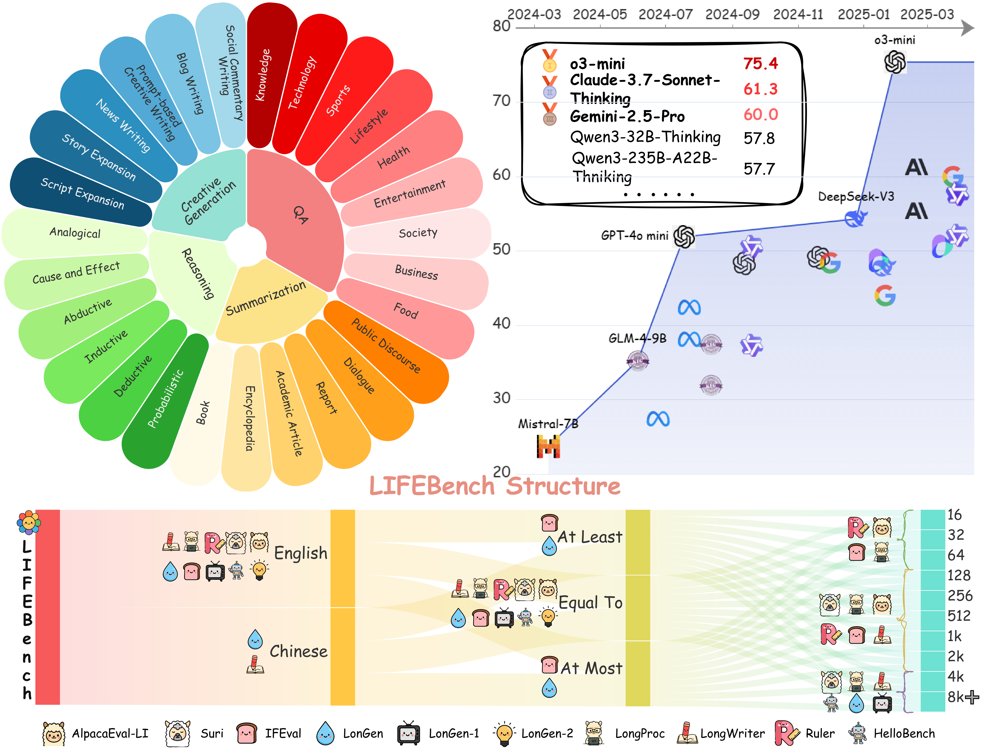

Overview
Main Result

Claimed Window

While large language models (LLMs) can solve PhD-level reasoning problems over long context inputs, they still struggle with a seemingly simpler task: following explicit length instructions—e.g., write a 10,000-word novel. Additionally, models often generate far too short outputs, terminate prematurely, or even refuse the request. Existing benchmarks focus primarily on evaluating generations quality, but often overlook whether the generations meet length constraints. To this end, we introduce Length Instruction Following Evaluation Benchmark (LIFEBench) to comprehensively evaluate LLMs' ability to follow length instructions across diverse tasks and a wide range of specified lengths. LIFEBench consists of 10,800 instances across 4 task categories in both English and Chinese, covering length constraints ranging from 16 to 8192 words. We evaluate 26 widely-used LLMs and find that most models reasonably follow short-length instructions but deteriorate sharply beyond a certain threshold. Surprisingly, almost all models fail to reach the vendor-claimed maximum output lengths in practice, as further confirmed by our evaluations extending up to 32K words. Even long-context LLMs, despite their extended input-output windows, counterintuitively fail to improve length-instructions following. Notably, Reasoning LLMs outperform even specialized long-text generation models, achieving state-of-the-art length following. Overall, LIFEBench uncovers fundamental limitations in current LLMs' length instructions following ability, offering critical insights for future progress.
BibTex Code Here